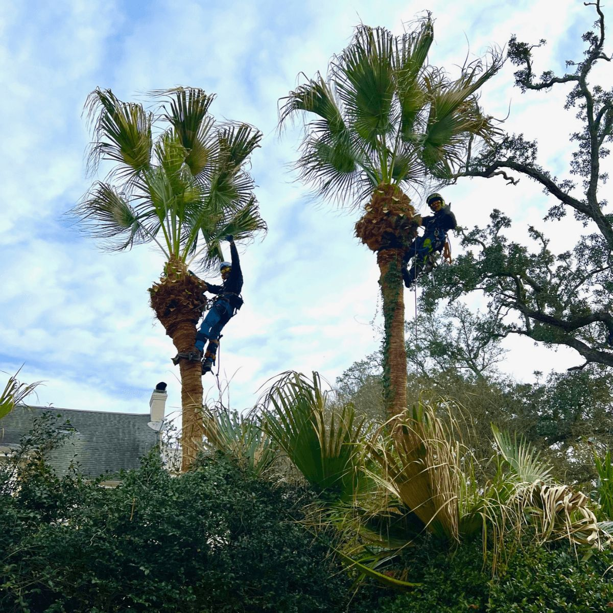

Tips For Troubleshooting And Maintenance Of Tree Fertilization
Trees are an integral part of our environment and play a key role in many ecosystems. Healthy trees can provide an array of benefits, including improved air quality, soil fertility, and wildlife habitats. But, like any living system, trees must be cared for properly to ensure their health and longevity. A Perfect Cut Tree will help you discuss the importance of tree fertilization and offer tips on how to troubleshoot and maintain it properly.
Urgent or unsafe? Call (504) 732-0779


Troubleshooting fertilizer problems and maintaining healthy trees through regular fertilization can be a difficult task for the inexperienced gardener. Fortunately, with a few simple tips and techniques, it’s possible to keep your trees healthy without breaking the bank or spending hours tending to them. We’ll cover everything you need to know about tree fertilization, from identifying potential problems to selecting the right fertilizer for your needs, so you can keep your trees looking their best!

Identifying Nutrient Deficiencies In Trees
When it comes to tree fertilization, one of the most important things you can do is identify nutrient deficiencies in your tree. These deficiencies can be caused by inadequate soil fertility, improper watering, or even a lack of sunlight.
To do this, you’ll need to examine the leaves and bark of the tree for signs of yellowing, wilting, or other discoloration. A soil test may also be necessary to determine which nutrients are lacking and how much fertilizer should be applied.
Once potential nutrient deficiencies have been identified, it’s time to apply the appropriate fertilizer. Depending on the type of deficiency, different kinds of fertilizers will be required, for example, slow-release fertilizers may work better for long-term deficiencies than liquid fertilizers would. It’s important to make sure you follow all directions on any product labels when applying fertilizer so that your trees receive the right amount at the right times.
Finally, regular maintenance is an essential part of keeping your trees healthy and vibrant. This includes regularly checking for pests or diseases as well as pruning dead branches and leaves.

Assessing Soil Quality And Ph Levels
Once nutrient deficiencies have been identified, it’s important to assess the soil quality and pH levels of your tree’s environment. Generally, most trees prefer slightly acidic soils that are well-drained and rich in organic matter. If the soil is too alkaline or lacks essential nutrients, it can be amended with fertilizer or compost. Additionally, soil tests can help you determine the best type of fertilizer to use for your particular tree species.
It’s also a good idea to check for any other environmental factors that may be affecting your tree’s health. This could include excessive heat, drought stress, or improper drainage. In cases where these issues can’t be fixed easily, it may be necessary to provide additional care such as shade cloths or irrigation systems to ensure that your tree gets the right amount of water and sunlight it needs.

Adjusting Fertilizer Application Rates And Schedules
Once you’ve established the right soil conditions for your tree, it’s time to adjust fertilizer application rates and schedules. Depending on the type of fertilizer used, different amounts will be required for different plants. Applying too much fertilizer can cause damage to delicate root systems while applying too little won’t provide enough nutrients. It’s best to follow the instructions on the package carefully and use a spreader or hand-held applicator to apply an even coating.
When it comes to scheduling applications, timing is everything. Certain fertilizers are meant to be applied at specific times of the year in order to maximize nutrient absorption. Fertilizing during periods of active growth will ensure that trees have access to all the necessary nutrients for healthy development. Additionally, some fertilizers are slow-release and should be applied less frequently than others.

Choosing The Right Type Of Fertilizer
Now that the importance of proper fertilizer application rates and schedules has been established, it’s time to look at what type of fertilizer is best for your tree. Different types of fertilizers contain different amounts and types of nutrients, so it’s important to choose one that meets the needs of your particular tree species. Organic fertilizer can be a great choice as it breaks down slowly, providing long-term nutrition to trees. Synthetic fertilizers have their advantages too, as they are often formulated to provide quick-release nutrition when plants need it most.
It’s also important to consider what type of soil you are dealing with when selecting a fertilizer. Clay soils may require more frequent applications than sandy soils, for instance. Additionally, some types of trees may do better with specific nutrients than others. Knowing what type of soil you have and what kind of tree you’re growing will help in choosing the right fertilizer for your needs.
Regardless of which type you choose, always make sure to follow the instructions on the package closely and apply them in moderation. Fertilizing too much or too often can cause damage to delicate root systems or cause nutrient overloads that can harm trees rather than help them grow strong and healthy. With careful selection and application, however, your tree can enjoy all the benefits that come from regular fertilization.

Monitoring For Signs Of Over-Fertilization
Once the correct type and amount of fertilizer have been decided upon, it’s important to monitor the tree for signs of over-fertilization. Too much fertilizer can cause a number of problems including the burning of foliage or roots, nutrient overloads, and poor plant growth.
A good way to check for signs of over-fertilization is to look at the soil around the tree. If there is an accumulation of fertilizer granules in the soil or if you notice that the soil is discolored, then it could be a sign that too much fertilizer has been applied. Additionally, if you see any yellowing or browning leaves on your tree, this could indicate an excess of nutrients in the soil.
If any of these signs are present, it’s important to stop fertilizing until further investigation can be done and adjustments made to ensure proper fertilization levels going forward.

Consulting With An Expert
If you’re still having problems with tree fertilization, or are looking for more detailed advice on how to provide your tree with the nutrients it needs to grow and thrive, consulting with a certified arborist may be beneficial. A certified arborist is a professional who specializes in the care and maintenance of trees. They have extensive knowledge and experience in all aspects of tree care, including fertilization and soil health.
A Perfect Cut Tree specializes in providing high-quality tree care services to residential and commercial properties. Our experienced arborists use the latest techniques to ensure that trees are properly fertilized, watered, and pruned. Our team is familiar with all aspects of proper fertilization, including choosing the right type and amount of fertilizer, applying fertilizer correctly, and monitoring for signs of fertilization problems. We also provide soil testing services to ensure that your tree is receiving the proper nutrients in the right amounts.
If you’re looking for professional help with tree fertilization, contact us today to learn more about our arborist services and how we can help make sure your trees stay healthy and strong.
What to Photograph From a Safe Distance
Photos and video show us the tree, the property around it, how we would reach it, and any visible hazards.


Tree down or a limb on a line?
Skip the photos and call. Calls are answered 24/7.
(504) 732-0779Office hours: Monday to Friday 7 AM to 5 PM, Saturday 7 AM to 3 PM, closed Sunday.


Ready to Show Us Your Tree?
Show us the tree. An arborist reviews what you send. Photos give us a first look. Some trees need an in-person visit before we can make a final recommendation.